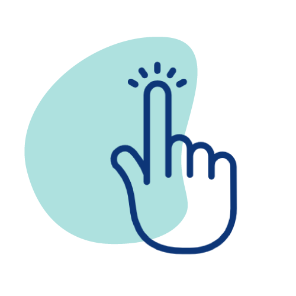
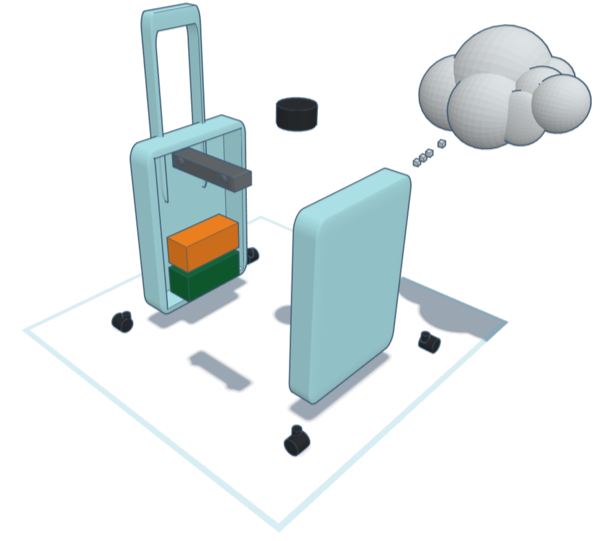
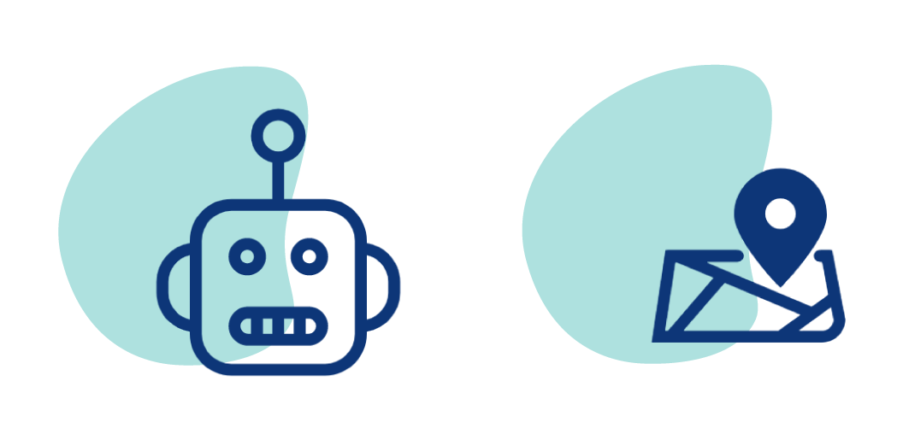
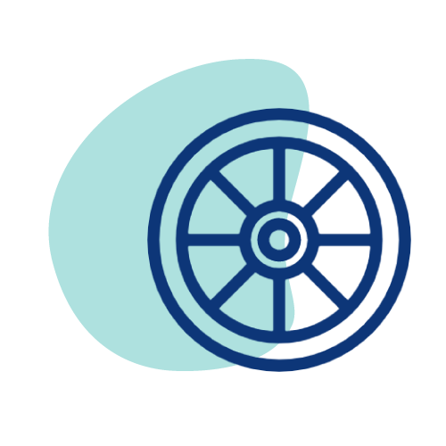

Sense
Cameras and sensors capture the environment and user context.
Technology
AI Suitcase combines sensing, environment understanding, route guidance, and mobility support into a single assistive robotics experience.
Flow
Cameras and sensors capture the environment and user context.
Computer vision and conversational AI interpret surroundings in real time.
Localization and robotic control turn that understanding into safe motion.
Field data and cloud-based workflows make iteration possible across venues.
Capabilities

The handle communicates direction and urgency through touch-based cues.
AI identifies landmarks, obstacles, and pedestrian flow in public spaces.

Dialogue and context-awareness turn raw sensor input into usable guidance.

Localization and robotic actuation guide users along safe routes.

The platform is designed for deployment across facilities and urban services.
The system complements existing mobility aids instead of replacing them outright.
Video
The mirrored local video is reused directly so the site remains easy to host as a plain static package.